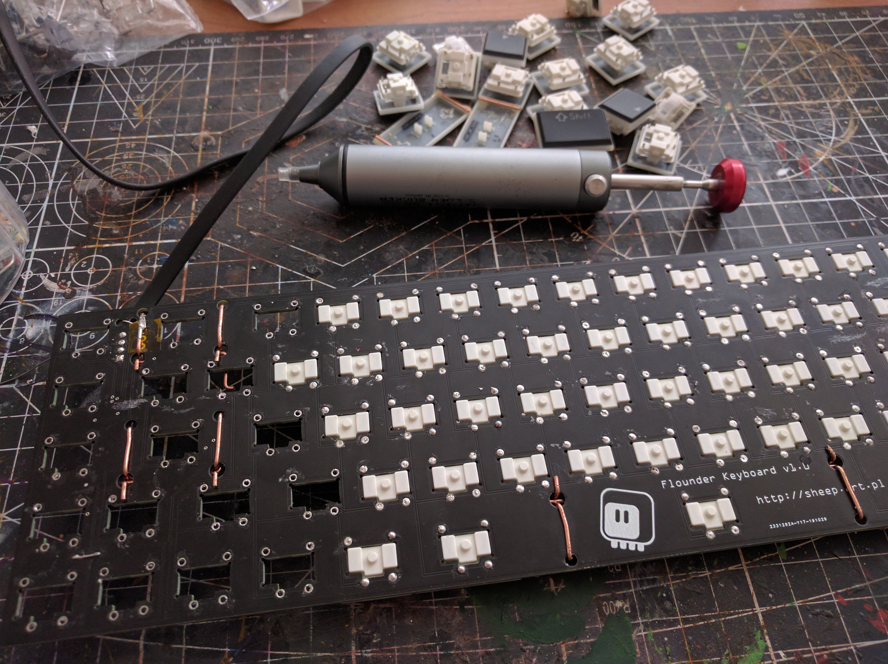
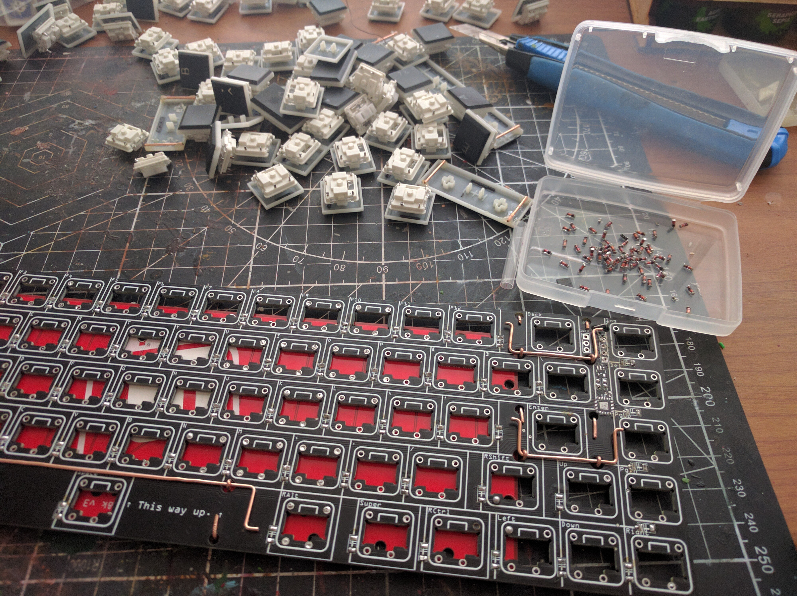

Scavenging¶
Published on 2020-09-24 in Turbot Keyboard.
While waiting for the PCB to be fabricated, I started on desoldering the switches from the Flounder keyboard:
The “Engineering” solder suction tool is indispensable for that. Then I broke out the hot air gun, and also desoldered the chip and diodes:
Afterwards I realized that the new design actually has five more keys than the old one, so I also ordered the missing switches. They probably will take a while to arrive, but I can have a few keys missing in the initial prototype.